| |
|
KORUYUCU TABAKA
|
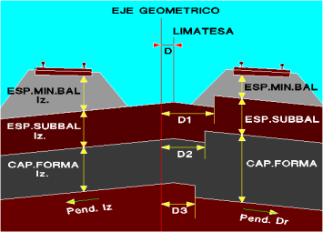Koruyucu tabakanın kalınlığını, çatı kırım noktasının (mahya) konumunu ve enine eğimlerini tanımlamaya olanak tanır. Eğer çatı kırım noktası istemiyorsak, sağa ve sola eşit değerde ancak zıt işaretli eğimler koyacağız. Bu menünün seçeneği, veri değerlerini sıfırlar ve subbalast ve minimum balast kalınlığına, HAT ve TRAVERS menüsünde belirtilen verileri atar. Koruyucu tabaka menüsünde tanımlanan yapılandırmayı sırasıyla  , ,  kutucukları aracılığıyla kaydedebilir veya yükleyebiliriz. Dosyalar .cdf uzantısına sahip olacaktır. kutucukları aracılığıyla kaydedebilir veya yükleyebiliriz. Dosyalar .cdf uzantısına sahip olacaktır.Eğimler, Eğim sağ (%) ve Eğim sol (%) alanlarında tanımlanır. RHEDA® plakası kullanılan durumlarda, koruyucu tabakanın üst yüzey eğimi, koruyucu tabakanın tabanına paralel olabilir veya, onay kutusu işaretlenirse, PLATFORM'da beyan edilen P4 koridorunun eğimine paralel olabilir. 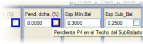 Subbalastın üst yüzeyinde P4 Eğimi seçeneği, RHEDA® plakası olmayan normal kesitler için de kullanılabilir; tek, çift veya optimum çatı kırım noktası ile; bu durumda subbalastın üst ve alt yüzeyinde P4 eğimi ve koruyucu tabakanın üst yüzeyinde P4 ve tabanında kendi eğimi bulunur. Subbalast Tabanı Koruyucu Tabakaya Paralel kutucuğu aracılığıyla, ki bu öncekiyle (Subbalastın üst yüzeyinde P4 Eğimi) birlikte kullanılır, subbalastın üst yüzeyini P4 eğimiyle ve tabanını koruyucu tabakanın eğimiyle tanımlayabiliriz. Koruyucu tabakanın tabanı ve üst yüzeyi paralel olacaktır. 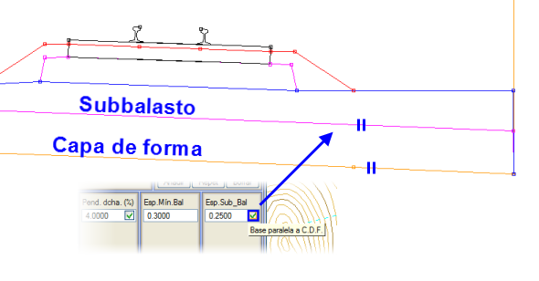
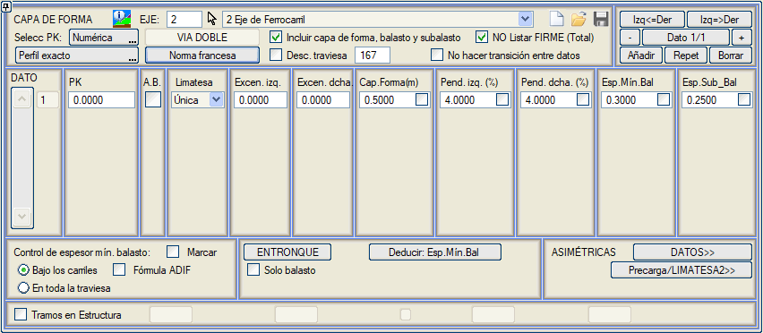
KORUYUCU TABAKA'nın kalınlığı Koruyucu tabaka alanında beyan edilir. A.B. sütunu: Balastı doğrudan koruyucu tabaka üzerine oturtma seçeneği etkinleştirilirse, balast eteğinden arazi üzerine yeniden şevlendirme yapılabilir. Bunun için yarma kesitinde yarma palyesi, hendek ve istenen yarma şev geometrisi tanımlanır ve yeniden şevlendirmeyi etkinleştirmek için, hendekte bazı zorunlu noktaların olduğunu işaretleriz. Bu kesitler, balastın araziyle birleştiği etekten itibaren, Dolgu Kenar Hendeği olarak tanımlanan bir hendek taşıyabilir. Çift hat durumunda çatı kırım noktası (mahya) şu şekilde olabilir:
Profiller açısından, subbalastı ve koruyucu tabakayı tanımlayan yüzeyler artan sayılarla (1, 2, 3, 4,…) kodlanır. PK kutusu ile çatı kırım noktası seçimi arasındaki kutucuk, Balastı doğrudan araziye oturt seçeneğini etkinleştirir; bu seçenekle ne subbalast ne de koruyucu tabaka oluşturulur. Özellikle koruyucu tabakanın önceden inşa edildiği işler için düşünülmüştür. 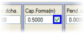 Sabit bir platform tanımlandığında, koruyucu tabaka ve subbalastın üst yüzeyinin hattın deverlerine paralel olması koşulu etkinleştirilebilir. Koruyucu tabaka, balast ve subbalastı dahil et seçeneği aktif olduğunda, subbalast üst yüzeyi (L46) ve koruyucu tabaka (L45) çizgileri, bu menüde girilen kalınlıklara göre doğrudan ISPOL#.per dosyasında oluşturulur. Metrajlara balast, subbalast ve koruyucu tabaka da dahil edilir. Balast, subbalastın üst yüzeyi ile platform yüzeyi (L67) arasındaki kalan malzeme olarak ölçülür. Eğer kesit başka tür dolgular içeriyorsa, bu seçeneği devre dışı bırakmak ve ÜSTYAPI PAKETLERİ menüsünü kullanmak tavsiye edilir (bu durumda balast metrajı elde edilmez). Koruyucu tabaka, balast ve subbalast içeren bölümlerin yanı sıra başka tür dolgu/kesit içeren bölümlerin (örneğin, plakalı bir hat) bulunduğu eksenler için, Koruyucu tabaka, balast ve subbalastı dahil et seçeneğini genel olarak işaretli bırakabilir ve kesitimizin bu unsurlardan yoksun olduğu bölümler için Min. Bal. Kal. yanındaki kutucuk aracılığıyla özelleştirebiliriz. code Code download content_copy expand_less 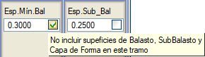
ÜSTYAPI (Toplam) Listeleme seçeneği etkinleştirilirse, ne listelerde ne de BIM nesnesi olarak ÜSTYAPI metrajı oluşturulmaz. Balast, subbalast ve koruyucu tabaka dahil edildiğinde etkinleştirilebilir. code Code download content_copy expand_less Veriler arasında geçiş yapma seçeneğini kullanmak mümkündür. Böylece bir KM için girilen değerler bir sonraki KM'ye kadar korunur. code Code download content_copy expand_less Minimum balast kalınlığının kontrolü için iki olasılık vardır: code Code download content_copy expand_less
code Code download content_copy expand_less
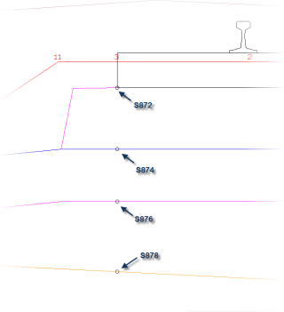
Sanat Yapısı Bölümleri kutucuğu etkinleştirilirse, Sanat Yapısı Bölümleri için bir Subbalast, Koruyucu Tabaka kalınlığı ve minimum bir Balast kalınlığı tanımlamaya olanak tanır. Varsayılan olarak Subbalast 0'a ve koruyucu tabaka 0.001'e ayarlanır. Bu bölümlerde koruyucu tabaka için farklı bir eğim tanımlamak da mümkündür. Traversi düş seçeneği, traversin kapladığı hacmi düşmeye olanak tanır. Etkinleştirilirse, hesaplama veya yeniden kübaj yapıldığında, belirtilen metrajdan (varsayılan olarak 167, kübaj tablosu ispol4.dar'daki balast alanına karşılık gelir), formüle göre traverslerin metre başına kapladığı hacim düşülür: code Code download content_copy expand_less
(Hat Sayısı) x (SEB · LT · AT) x (1/DT)
code
Code
download
content_copy
expand_less
Eğer .dar tablosunda Balast özelliğine sahip bir metraj varsa, o zaman bu metraj öncelikli olur. code Code download content_copy expand_less Asimetrik kesitler durumunda, ekranın sağ alt köşesindeki [VERİLER] seçeneğine basarak daha fazla parametre tanımlama imkanı vardır, bu da yeni bir veri giriş diyalog kutusu gösterir: code Code download content_copy expand_less 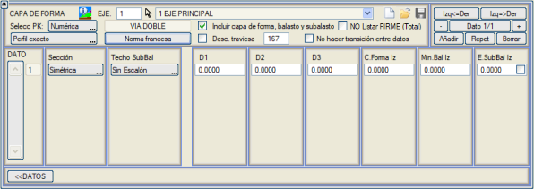
Çift hat durumunda, kutucuk, her iki tarafta farklı kalınlıklar ve kalınlık değişim noktasına bir mesafe (D1, D2 ve D3) beyan etmeye olanak tanır. Yani, gösterilen seçeneklerle sağ ve solda farklı balast, subbalast ve koruyucu tabaka değerleri tanımlanabilir. code Code download content_copy expand_less Basamağın konumu da tanımlanabilir. Varsayılan olarak, subbalast üst yüzeyindeki basamak, daha yüksek kalan taraftaki subbalast ve koruyucu tabakayı indirerek ortadan kaldırılır (o tarafta minimum subbalast kalınlığı öngörülenden daha büyük olacaktır). code Code download content_copy expand_less Asimetrik kesitler durumunda, her iki tarafta dışarıda dört adede kadar kırılma noktası tanımlama imkanı vardır; her taraf için geometrik eksene göre eksantrisite ve eğim tanımlanır, bu durumda subbalast ve koruyucu tabakanın üst yüzeyi bu kırılmaları takip eder. Hatta, dış koridor subbalastın uzantısı olarak tanımlanırsa, bu ikinci çatı kırım noktası bu dış koridorun altına gidebilir. Bu tanıma [Ön Yükleme/ÇATI2] düğmesine basılarak erişilir, bu da bu parametreleri girmek için aşağıdaki diyalog kutusunu gösterir: code Code download content_copy expand_less 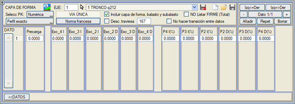
Bir Ön Yükleme kalınlığı değeri tanımlayabiliriz. Bu kalınlık, koruyucu tabaka üzerinden ölçülür. Metraj, diğer metrajlarla birlikte verilir. code Code download content_copy expand_less 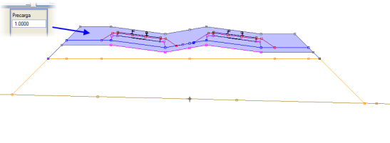
Fransız Yönetmeliği [Fransız Yönetmeliği] düğmesi, koruyucu tabakanın eğimlerini, 100 mm'den büyük devere sahip kurplar için koruyucu tabakanın kurbun içine doğru tek eğimli hale gelecek şekilde oluşturur. code Code download content_copy expand_less 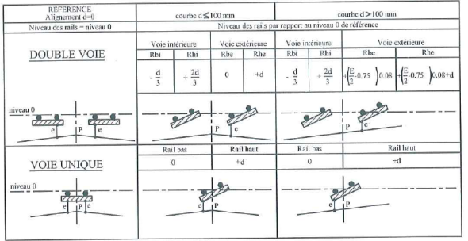
Balast hacmini azaltmayı amaçlayan bu seçenek, deverleri Fransız yönetmeliğine göre tanımladıktan sonra kullanılmalıdır. Bağlantı code Code download content_copy expand_less 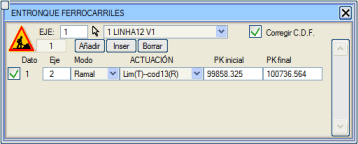Yakın ve platform paylaşan bölümlerdeki iki eksen için, subbalast ve koruyucu tabakanın geometrisinin aşağıdaki şekilde değiştirileceği beyan edilebilir: code Code download content_copy expand_less
Minimum balast kalınlığını ve eğimi türet code Code download content_copy expand_less 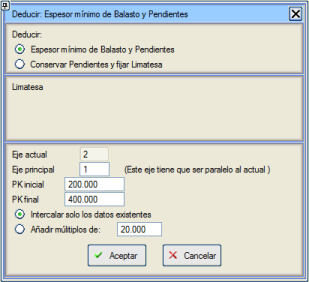Bir bölümde minimum balast kalınlığı ve koruyucu tabakanın enine eğim değerlerini, mevcut eksene paralel bir ana eksenden yola çıkarak, eksenimizin subbalastının üst yüzeyinin ana eksenin uzantısında ve tek eğimli olacak şekilde türetmeye olanak tanır. Tanımlanan bölümde (Başlangıç Km ve Bitiş) bu değerler, koruyucu tabaka tablosunda mevcut tüm veriler için yeniden hesaplanır (Sadece mevcut verileri araya ekle), ancak ayrıca önceden belirlenmiş bir değerin katları olan yeni veriler de eklenebilir. code Code download content_copy expand_less Örnek: code Code download content_copy expand_less Türetme uygulamadan önce: code Code download content_copy expand_less code Code download content_copy expand_less Türetme uyguladıktan sonra: code Code download content_copy expand_less  Bu
araç ayrıca, bir çatı kırım noktasının (mevcut eksenin ve ana eksenin
balast tabanının kesişimi) konumunu sabitlemeye olanak tanır. Eğimleri Koru ve Çatı Kırım Noktasını Sabitle kutucuğunu etkinleştireceğiz. Bu
araç ayrıca, bir çatı kırım noktasının (mevcut eksenin ve ana eksenin
balast tabanının kesişimi) konumunu sabitlemeye olanak tanır. Eğimleri Koru ve Çatı Kırım Noktasını Sabitle kutucuğunu etkinleştireceğiz.Bu konum, mevcut eksene mesafe, ana eksene mesafe veya her iki eksenin orta noktası verilerek sabitlenebilir. (Geometrik eksenler, plan eksenleri değil). Bu durumda program, koruyucu tabaka için verilen eğimleri değiştirmeden, çatı kırım noktasının sabitlenen noktada oluşması için mevcut eksen için minimum balast kalınlığını belirler. code Code download content_copy expand_less Örnek: Aşağıdaki resimlerle bu yöntemi kullanmadan önceki ve sonraki durum gösterilmektedir. code Code download content_copy expand_less 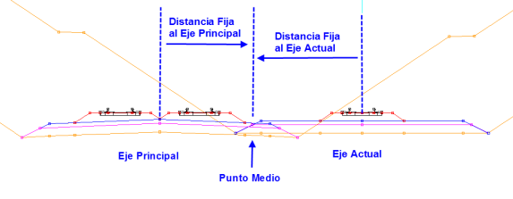
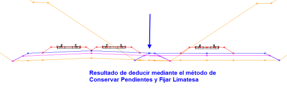
Sadece balast 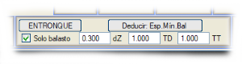 Bu mod, hat iyileştirme projeleri için düşünülmüştür. Bu seçenek etkinleştirildiğinde ve koruyucu tabaka olmadığında (yani, sıfır subbalast ve koruyucu tabaka kalınlıklarımız olduğunda), kesit, balastın dış eteğinde, zemine yakın olduğunda kesilir. Etkinleştirildiğinde üç parametre girebiliriz:
|